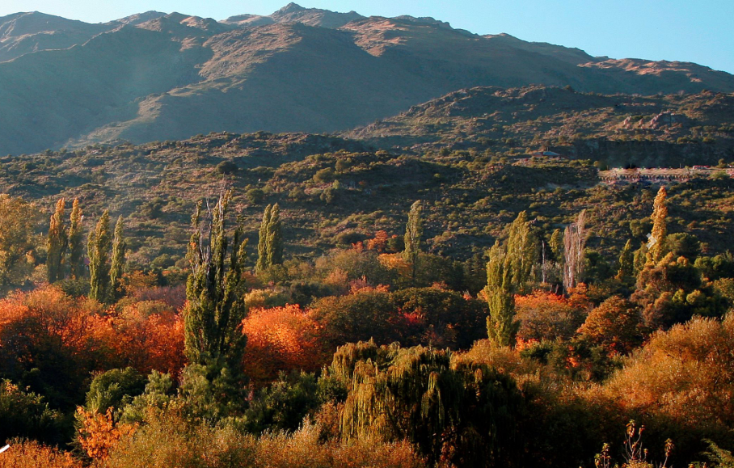
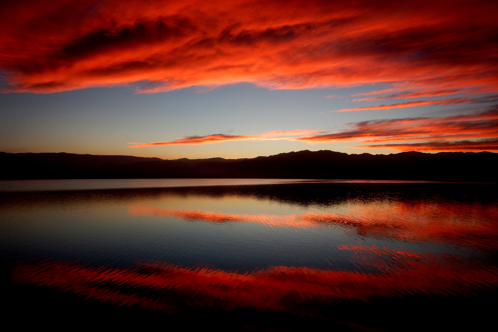

Mendoza

San Luis

La Región de Cuyo se ubica sobre la Cordillera de los Andes y se extiende hasta el sur de las
sierras pampeanas, abarcando a las provincias de Mendoza, San Juan y San Luis.
En el cordón montañoso de los Andes, se erige el Aconcagua (6.959 m.s.n.m.) que atrae a los aventureros de todo
el mundo en busca de alcanzar la cumbre más alta de América. También se destacan otros cerros como el Tupungato,
Mercedario y Cordón del Plata, ideales para practicar alpinismo, escalada y trekking. Y en los centros
invernales de Mendoza, donde disfrutar de las mejores pistas de nieve de la región
Por cierto, la misma Cordillera que te invita a hacer la Ruta Sanmartiniana en la que fue la histórica
expedición libertadora del Gral. San Martín, y cabalgar el cruce de los Andes en Mendoza y en San Juan.
Cuyo también se destaca por la Ruta del Vino ya que concentra la mayor producción de vinos del país y variedad
de cepas (Malbec, Chardonnay, Sauvignon Blanc, Chenin y Riesling, Bonarda, Merlot, Cabernet Sauvignon, Pinot y
Syrah). Y podés elegir entre una diversidad de bodegas, más de mil para conocer: desde pequeñas cavas al pie de
la Cordillera, bodegas artesanales, bodegas boutique o las industriales. Imperdible es participar de una cosecha
de uvas, hacer paseos en bici o cabalgatas entre vides y visitar sus museos temáticos.
En Cuyo vas a poder conocer más de veinte áreas naturales, algunas que son un gran atractivo para el turismo
científico y paleontológico. Entre sus puntos más destacados San Juan cuenta con el Parque Nacional El Leoncito
y el Parque Provincial Ischigualasto, este último incluido dentro del Patrimonio Mundial (UNESCO). Y en San
Luis, el Parque Nacional Sierra de las Quijadas, otro imperdible de la región.
¡Mirá más de lo que podés hacer en la Región de Cuyo!
Protocolos para el viaje

Medidas Sanitarias del viaje